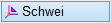
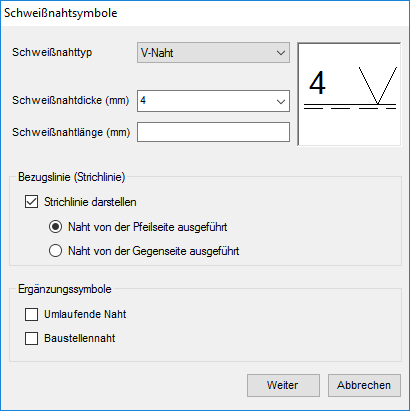

")
")
Alternativer Aufruf: mittlere Maustaste auf ein Schweißnahtsymbol.
Definition von Schweißnahtsymbolen. Öffnet den Dialog Schweißnahtsymbole.
§Wählen Sie im Dialog den Schweißnahttyp und die Darstellung.
§Wenn Sie die Bearbeitung abgeschlossen haben, klicken Sie im Dialog auf Weiter.
Falls Sie Korrekturen vornehmen möchten, klicken Sie unterhalb der Abfrage [Lage Symbol] auf die Schaltfläche Definition, um den Dialog wieder zu öffnen.
§Bewegen Sie das Symbol an die gewünschte Stelle und setzen Sie dieses mit Linksklick ab. [Lage Symbol].
§Ziehen Sie mit dem Cursor eine oder mehrere Zeigerlinien zu den gewünschten Punkten. [Lage Zeigerlinie (beenden mit rechter Maustaste)].
Die Zeigerlinien können am Anfang oder am Ende der Unterstreichungslinie beginnen. Es ist möglich, während der Eingabe, im Funktionsbereich die Stiftnummer für die Linien zu wechseln.
§Beenden Sie die Aktion mit Rechtsklick.
Wenn Sie ein neues Symbol definieren möchten, klicken Sie unterhalb der Abfrage [Lage Symbol] auf die Schaltfläche Definition.
Optionen im Dialog "Schweißnahtsymbole"
 |
Schweißnahttyp
Wählen Sie aus der Ausklappliste den gewünschten Typ aus.
Schweißnahtdicke (mm)
Sie können die Dicke der Schweißnaht entweder direkt eintippen oder aus der Ausklappliste auswählen.
Schweißnahtlänge (mm)
In das Eingabefeld können Sie die Länge der Schweißnaht eingeben.
Bezugslinie (Strichlinie)
Strichlinie darstellen
Setzen Sie einen Haken in die Checkbox, um die Darstellung der Bezugslinie auszuwählen. Anschließend wählen Sie eine der beiden Möglichkeiten.
Naht von der Pfeilseite ausgeführt Die gestrichelte Linie befindet sich oberhalb der Unterstreichungslinie. Naht von der Gegenseite ausgeführt Die gestrichelte Linie befindet sich unterhalb der Unterstreichungslinie. |
Ergänzungssymbole
Umlaufende Naht
Wenn Sie hier den Haken setzen, wird ein Kreis an die Symbollinie gesetzt.
Baustellennaht
Wenn Sie hier einen Haken in die Checkbox setzen, wird das Symbol mit einem Fähnchen versehen.

Die Angaben werden übernommen und der Dialog geschlossen. Sie können das Symbol auf der Zeichenfläche platzieren.

Der Dialog wird geschlossen. Die Funktion [SchnPf] wird aktiviert.
Siehe auch:
Zugehörige Referenzen: